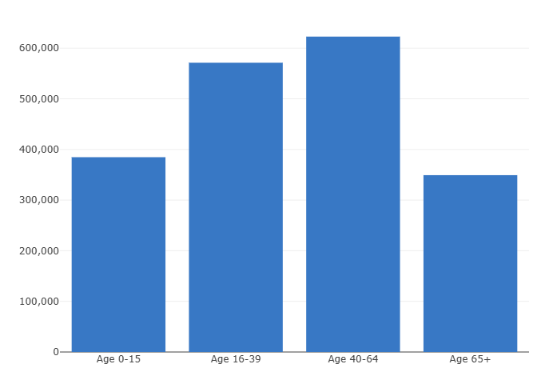

How many people live in Northern Ireland?
In around million people lived here ().

What does our population look like?
In , approximately:
- 20% were children under the age of 16
- 62% were working age adults (16 to 64 years old)
- 18% were 65 and over
How has our population changed?
Our population has been steadily growing.
- In 2001 it was about 1.7 million (1,688,838).
- That's an increase of almost 240,000 people (equivalent to two thirds of all the people who live in Belfast, or about three Derry~Londonderrys!)
What causes population change?
Population change is driven by three main factors:
- births,
- deaths,
- and migration (people moving in and out of Northern Ireland)
Our population growth is due to more babies being born than people dying, and more people coming to live here than are leaving.
What does the future look like?
Our population is ageing. To measure this, we look at the average age (in this case we use the median). If we lined up all our citizens from youngest to oldest, the one in the middle would be the median.
- In 1994 the median age was 32.
- In 2024 it was 40.
Our population growth is also predicted to slow down, peak in 2033 at 1.95 million and then fall slightly to 1.93 million by 2047. That is based on trends on how long we live and how many babies are born
Where do these statistics come from?
The main population counts come from the Census, which takes place every 10 years. The most recent was 2021.
Each year, NISRA then estimates how many people live in Northern Ireland on 30 June. This is called a 'mid-year estimate'.
We start with last year's number, add babies born, subtract deaths, and count people who moved in or out.
Why are these statistics important?
Government departments use population statistics to plan public services such as education, health and transport. They help us plan how many schools, hospitals and care homes etc. we need.
They are also useful to academics and researchers, and they help us calculate how often events (such as crimes or illnesses) occur per a certain number of people so we can make comparisons.